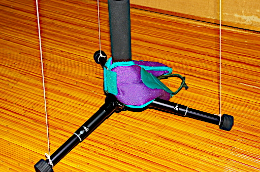
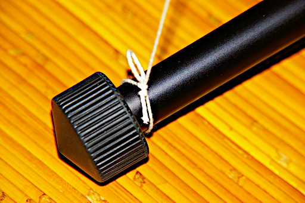
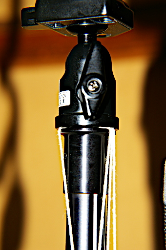

2018 年
09 月 28日 ( 金 )
Velbon Pole Pod III を安定させるための試行錯誤 Part II
前回なんとか Velbon Pole Pod III を安定的に立たそうということを考えて自宅内ですがテストしてみました。その方法とは三脚部分に重りを乗せて安定を図るということでした。

これで Pole Pod の自立は不可能ではなくなったもののポール自体の揺れは防ぐことはできませんでした。今回はこのポールの揺れをなんとかしようと、キャンプでテントを張るときのテクニックを応用してポールの揺れを最小限にしようと試みてみました。それが下の写真になります。

なにやら紐が見えますね。実はこれはタコ糸なのですが、タコ糸をテント用のガイラインに見立てて Pole Pod にラインを張ってやれば、テントのように Pole Pod が安定するのではないかというテストです。
もちろん三脚部分には転倒防止と三脚部の安定のために 2kg の重りをくくりつけています。

そして脚元の三脚の各脚に引き解け式のエバンス・ノットでタコ糸をくくりつけます。引き解け式にするのはタコ糸をあとで捨てることになるのがもったいないからです。それとエバンス・ノットって何？って人はネットや動画サイトで検索してみてくださいね。簡単なロープワークです。

写真を見てるとタコ糸に力が加わると滑って脚の根本に結び目が移動してタコ糸が緩んでしまいそうな気がしますが、逆にタコ糸に力が加わると摩擦力が増えてかえって結び目が移動しにくくなるようです。
そして雲台とポールをつなぐネジにタコ糸をぐるりと巻いて下に垂らしてやります。写真ではぴっしりと張っていますけど。

あとはトートライン・ヒッチでタコ糸をピンと張ってやれば完成です。トートライン・ヒッチがわからない人はやっぱりネットや動画サイトで検索してくださいね。別名自在結びともいうのでトートライン・ヒッチで検索ヒットしなければ自在結びで検索してみて下さい。

それでこれによりポールが安定したのかと言うと、全く揺れないということはないものの実は若干安定しました。ポールの揺れの減衰が目に見えて早かったのはたしかです。
いいじゃんこれ、と一瞬思いましたが一つ大きな問題点がありました。それは設置に時間がかかりすぎることです。テントの設営ほどには時間がかかります。一度テントの設営動画を動画サイトで見てみて下さい。こんなこと実際の撮影の現場で毎回やってられません。
結局 Velbon Pole Pod III の安定化対策は三脚部分に重りを乗せるだけになりそうです。でもその重りを利用する方法にもひと工夫する予定です。そのためのパーツも注文しました。パーツが届いて追加の重りが届いたらまた記事に取り上げようと思います。
ではまた。
- Category :
- 日記
- カメラ
- 写真
- 三脚
- 一脚
- Velbon Pole Pod 3
- エバンスノット
- トートラインヒッチ